.svg)
為改編自鳥山明原作七龍珠的動畫電影。在1980年代與1990年代因應東映影視（現為東映ANIMATION）的「東映アニメフェア(東映動畫博覽會)」與
「東映アニメまつり(東映動畫節)」政策，由東映動畫公司正在製播的動畫節目於每年的春天、夏天於電影院公開長篇的動畫電影，該活動的主要對象
為男孩及女孩的兒童(少年、少女/子供)，故亦稱為東映兒童動畫節。其中1993年至1995年這三年期間的動畫電影以「東映超級英雄博覽會(東映スーパ
ーヒーローフェア)」活動主題公開發表。
第一部《七龍珠 神龍傳說》在上映的時候只有主標題「七龍珠」，副標題則是在後來發售錄影帶時才補上，第4部《七龍珠Z 熱血熱鬥》也是有出現相同
情形，但是在發售DVD的時候又將標題改回《七龍珠Z》。第18部《七龍珠Z 神與神》是鳥山明擔任角色設計、參與監修及台詞設計。第19部《復活的「F」
》是鳥山明擔任劇本及角色設計。第20部主標題更改為《七龍珠超》。劇場版的中文字幕版在臺灣是由木棉花國際代理第1部到第17部，第18部之後則是改
由普威爾國際代理。
電影列表
| 序號 | 中文標題 | 日文標題 | 導演 | 劇本 | 上映日期 |
|---|---|---|---|---|---|
| 第1作 | 七龍珠 神龍傳說 | ドラゴンボール 神龍の伝説 | 西尾大介 | 井上敏樹 | 1986年12月20日 |
| 第2作 | 七龍珠 魔神城內的睡美人 | ドラゴンボール 魔神城のねむり姫 | 照井啓司 | 1987年7月18日 | |
| 第3作 | 七龍珠 摩訶不思議大冒險 | ドラゴンボール 摩訶不思議大冒険 | 竹之內和久 | 由木義文 | 1988年7月9日 |
| 第4作 | 七龍珠Z 熱血熱鬥 | ドラゴンボールZ オラの悟飯をかえせッ!! | 西尾大介 | 小山高生 | 1989年7月15日 |
| 第5作 | 七龍珠Z 世上最強之人 | ドラゴンボールZ この世で一番強いヤツ | 1990年3月10日 | ||
| 第6作 | 七龍珠Z 地球超決戰 | ドラゴンボールZ 地球まるごと超決戦 | 1990年7月7日 | ||
| 第7作 | 七龍珠Z 超級賽亞人孫悟空 | ドラゴンボールZ 超サイヤ人だ孫悟空 | 橋本光夫 | 1991年3月9日 | |
| 第8作 | 七龍珠Z 最強對最強 | ドラゴンボールZ とびっきりの最強対最強 | 1991年7月20日 | ||
| 第9作 | 七龍珠Z 激鬥!百億能量的戰士們 | ドラゴンボールZ 激突!!100億パワーの戦士たち | 西尾大介 | 1992年3月7日 | |
| 第10作 | 七龍珠Z 極限之戰!!三大超級賽亞人 | ドラゴンボールZ 極限バトル!!三大超サイヤ人 | 菊池一仁 | 1992年7月11日 | |
| 第11作 | 七龍珠Z 燃燒!熱戰・烈戰・超激戰 | ドラゴンボールZ 燃えつきろ!!熱戦・烈戦・超激戦 | 山內重保 | 1993年3月6日 | |
| 第12作 | 七龍珠Z 銀河面臨危機!! 身手不凡的高手 | ドラゴンボールZ 銀河ギリギリ!!ぶっちぎりの凄い奴 | 上田芳裕 | 1993年7月10日 | |
| 第13作 | 七龍珠Z 危險的2人！ 超戰士難以成眠 | ドラゴンボールZ 危険なふたり!超戦士はねむれない | 山內重保 | 1994年3月12日 | |
| 第14作 | 七龍珠Z 超戰士擊破！！ 勝利屬於我 | ドラゴンボールZ 超戦士撃破!!勝つのはオレだ | 上田芳裕 | 1994年7月9日 | |
| 第15作 | 七龍珠Z 復活融合!!悟空與貝吉達 | ドラゴンボールZ 復活のフュージョン!!悟空とベジータ | 山內重保 | 1995年3月4日 | |
| 第16作 | 七龍珠Z 龍拳爆發!!悟空捨我其誰 | ドラゴンボールZ 龍拳爆発!!悟空がやらねば誰がやる | 橋本光夫 | 1995年7月15日 | |
| 第17作 | 七龍珠 最強之道 | ドラゴンボール 最強への道 | 松井亞彌 | 1996年3月2日 | |
| 第18作 | 七龍珠Z 神與神 | ドラゴンボールZ 神と神 | 細田雅弘 | 渡邊雄介 | 2013年3月30日 |
| 第19作 | 七龍珠Z 復活的「F」 | ドラゴンボールZ 復活の「F」 | 山室直儀 | 鳥山明 | 2015年4月18日 |
| 第20作 | 七龍珠超 布羅利 | ドラゴンボール超 ブロリー | 長峯達也 | 2018年12月14日 | |
| 第21作 | 七龍珠超 超級英雄 | ドラゴンボール超 スーパーヒーロー | 兒玉徹郎 | 2022年6月11日 |
電影介紹
七龍珠 神龍傳說
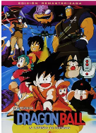
很久很久以前，曾流傳着這樣一個傳説：神創造了七顆龍珠，散落在世界的各個角落。據説只要集齊這些龍珠並念出咒語，便可召喚出神龍，而神龍將幫助你實現一個願望。
時尚女孩布瑪獨自來到深山尋找龍珠，偶遇居住在這裏的少年小悟空。小悟空個子雖小，卻擁有一身的本領。經過一波三折，他們最終一同踏上尋找龍珠的旅程。另一方面， 在遙遠的地方有一個咕嚕曼斯王國，當地盛產極為珍貴的紅寶石。受利益驅動，國王的軍隊將當地百姓趕出家園，大肆破壞田地。而窮奢極欲的國王吃盡天下的美食，如今卻 想嚐嚐神龍肉的味道。一場圍繞龍珠展開的奇幻大冒險就此拉開序幕……
時尚女孩布瑪獨自來到深山尋找龍珠，偶遇居住在這裏的少年小悟空。小悟空個子雖小，卻擁有一身的本領。經過一波三折，他們最終一同踏上尋找龍珠的旅程。另一方面， 在遙遠的地方有一個咕嚕曼斯王國，當地盛產極為珍貴的紅寶石。受利益驅動，國王的軍隊將當地百姓趕出家園，大肆破壞田地。而窮奢極欲的國王吃盡天下的美食，如今卻 想嚐嚐神龍肉的味道。一場圍繞龍珠展開的奇幻大冒險就此拉開序幕……
七龍珠 魔神城內的睡美人
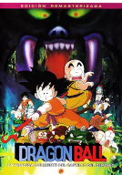
悟空踩着筋斗雲，穿越千山萬水來到武天老師的住處，希望在此繼續磨練武功。與之先後到來的，還有精於諂媚之道的小滑頭克林。武天老師故意端着架子，聲稱只有救出魔
神城的睡美人才同意收他們為徒。兩個小傢伙信以為真，爭先恐後向魔神城進發，期間克林還為悟空製造不少的麻煩。歷經千辛萬苦，他們終於來到了目的地。與此同時，布瑪
、亞姆、普爾和烏龍來找武天老師玩，得知消息後也趕往魔神城尋找悟空，途中卻遭到惡魔們的襲擊，布瑪更被看似英俊實則兇殘的惡魔城主路西法俘虜。此時此刻，惡魔們正
在進行一項邪惡的計劃，悟空不得不全力拯救危機。
七龍珠 摩訶不思議大冒險
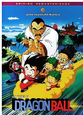
龜仙人帶孫悟空和克林去參加米飯國武術大會，途中認識了一對印第安人父子，也遇到了龜仙人的同門死對頭鶴仙人及其徒弟天津飯和米飯國皇帝餃子。但是在比賽中印第安人
由於龍珠慘遭殺手桃白白殺害，孫悟空憤怒卻輸給桃白白，後孫悟空得到貓仙人指點並打敗了桃白白。天津飯顧念與餃子的友誼，與師傅鶴仙人劃清界限，小印第安人使用龍珠將父親復活。
七龍珠Z 熱血熱鬥
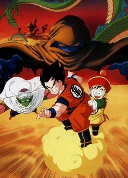
第23屆比武大會結束後，孫悟空將世界從比克大魔王的手中拯救出來。數年後的一天，滿懷怨恨的比克發誓打敗孫悟空，此時卻突然遭到一群不明
身份敵人的襲擊，這一事件讓神殿中的神倍為焦慮。此後不久，正享受快樂田園生活的悟空一家也遭到怪人的突襲，不僅四星龍珠被搶走，連年幼
的悟飯也遭到綁架。這一切的始作俑者名叫卡利克二世，三百年前他的父親競爭神的寶座失敗，而今解除封印的二世企圖通過神龍實現長生不老的
願望，將全世界納入他黑暗的恐怖統治之下。感受到悟飯身體內蘊藏的驚人力量，卡利克決定將其培養成自己的手下。悟空會坐視這一幕的發生嗎？
七龍珠Z 世上最強之人
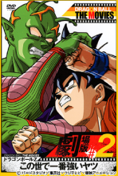
趁布瑪和龜仙人不注意，色色的烏龍偷出龍珠探測器，與悟飯前往寒冷的茲魯麥普雪山尋找聚在一起的龍珠。此時此刻，邪氣逼人的克勤博士早已捷
足先登召喚神龍，許願將沉睡在冰原下的威洛博士甦醒。伴隨着巨大的響動，碩大神秘的建築出現冰原，另有奇怪兇猛的生物接連襲擊悟飯等人，關
鍵時刻比克大魔王出現拯救悟飯，而比克卻下落不明。未過多久，威洛博士的爪牙相繼向龜仙人襲來。原來五十年前他以天才科學家的盛名為世人熟
知，但其才能卻遭到埋沒。而今復活後他僅有大腦存在，為了實現向人類復仇的野望，威洛博士急需擁有世上最強者的身體……
七龍珠Z 地球超決戰
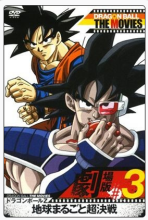
本片為七龍珠的劇場版。在一個陽光明媚的日子裡，克林、布瑪、悟飯相約去山裡野營。夜深人靜，一枚來自外太空的飛行器引發森林大火。克林和
悟飯用氣吹散大火，並集結七顆七龍珠召喚神龍，將被火焚燬的森林恢復原狀。悟飯還認識了新朋友快速龍。未過多久，新的敵人向地球逼近，他是
與悟空長相極其相似的邪惡賽亞人達列斯。達列斯帶著爪牙在宇宙中流浪，到處尋找適合種植神精樹的星球。神精樹的果實可以成倍提高一個人的戰
鬥力，但這種樹也會將該星球的生命力全部吸收耗盡。為了阻止達列斯的陰謀，拯救賴以生存的美麗地球，Z戰士團結一致，迎戰敵人……
七龍珠Z 超級賽亞人孫悟空
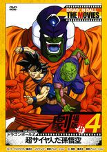
一個不明星體逼近地球，具有強力的邪惡氣息，一位自稱宇宙大王的外星人史拉格乘隙進而控制地球，甚至以黑霧包圍整個大地，使著地球漸漸失去
生機。原來 由於史拉格已是年邁老者，一得知地球有七龍珠下落，便立刻派部下來地球搜尋， 更驚人的是從他口中得知：「自他出生以來就對七龍
珠有著熟悉的記憶。」 悟空等人於史拉格軍團多次戰鬥，仍舊阻止未果， 史拉格終於向七龍珠許願，把自己變回年輕力壯的時期，對悟空等人發動
殘酷的攻擊。在劣勢中，突然憤怒的悟空從周圍的氣發出金光，爆發壓倒性的力量，迫使原本全身包覆的史拉格把頭套拔掉，露出他真正的全貌
七龍珠Z 最強對最強
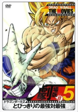
那美克星一役，宇宙最大惡棍弗利札及其軍團徹底覆滅，孫悟空也在憤怒的驅使下變身成為超級賽亞人，開創了Z戰士的新時代。歷經千辛萬苦，他們
重返故鄉地球。然而和平的生活並未持續多久，新的危機突然降臨。弗利札的落敗，引起了他的哥哥克維拉的注意。這個比弟弟更為邪惡且藴藏着更大
野心的惡棍，率領手下逼近地球。那美克星的恩怨仍在延續，戰火燒到了地球。為了保護故鄉和親友，Z戰士們再次集結，與新的敵人展開殊死壯絕的
戰鬥。最強對最強，生存之戰拉開序幕……
七龍珠Z 激鬥!百億能量的戰士們
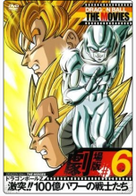
很久以前在宇宙墳場中的一電腦芯片因長時間的能量作用而增強了自身的能量，之後它吸收宇宙間的物質作為能量漸漸形成為巨大的機械星球比高星。
垂死的克維拉飄流到這個星球並與主電腦融合支配了這個星球而自己則變成了金屬克維拉。比高星想吃掉新那美克星，所以那美克星人找悟空幫忙。金
屬克維拉靠比高星的高科技不斷複製，所以孫悟空和貝吉塔都打不倒他，後來能變超賽的兩人同時被捉並被比高星吸收了能量，但超級賽亞人的能量太
多，超過比高星能量儲存的上限並導致部分機器損壞。最後悟空用一個能量球消滅了金屬克維拉的核心。
七龍珠Z 極限之戰!!三大超級賽亞人
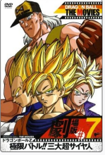
蓋洛博士被自己造出的17號人造人給背叛了，雖然他已死去，但是他的復仇心卻移轉到了他所使用的電腦之中。因此而擁有了復仇心的電腦，為了創造
最強的人造人而繼續運作著，就在它將仇恨心給強化之後，所完成的實體化的產物便是13、14、15號的人造人。而這群人造人甚至還擁有悟空的所有資
料…。於是，正當悟空一行人正和樂的吃著飯時，電腦所創造出的人造人們正往著悟空的方向前去…。擁有強勁戰鬥力的人造人究竟又要為悟空一行人製
造出什麼危難了!?
七龍珠Z 燃燒!熱戰・烈戰・超激戰

賽亞人餘黨帕拉伽斯帶着他的兒子布羅利大肆破壞南銀河，最終父子二人降臨地球，請求貝吉塔登基成為新貝吉塔行星的國王。貝吉塔相信了他的話，
為了建立宇宙最強大的帝國，他跟帕拉伽斯父子前往新貝吉塔行星。對此感到可疑的未來特蘭克斯、孫悟飯等人為查明真相，也跟了過去，最終發現帕
拉伽斯欲借布羅利的力量統治宇宙，邀請貝吉塔當新貝吉塔行星國王只是為了掩飾這個目的。一場大戰在所難免。然而令Z戰士始料未及的是，外表瘦
小軟弱的布羅利體內竟隱藏着極為強大的力量。他所變身的超級賽亞人成為了每一個Z戰士的噩夢。銀河系危在旦夕……
七龍珠Z 銀河面臨危機!!身手不凡的高手
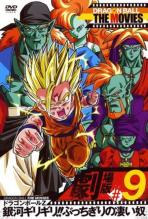
經歷過沙魯戰役過後，地球終於迎來了寶貴的和平，而騙子撒旦作為拯救了世界的英雄受到全人類的愛戴。世界首富錢多多為了給寶貝兒子慶生，出巨資舉行了新一屆的天下第一比武大會，成功晉級的選手有望和錢多多請來的四名所謂的外星人對決，最終獲勝者還可以得到挑戰撒旦的殊榮。此外，勝
利者將得到一億元獎金和環遊世界的機會。超高的榮譽和報酬，連Z戰士也坐不住了，紛紛報名參加。當然悟飯、特蘭克斯等人的出現，讓撒旦心驚膽
顫。一番較量過後，悟飯等人順利晉級，但是等待他們的卻是無比兇殘和強大的宇宙人。
七龍珠Z 危險的2人！ 超戰士難以成眠
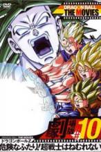
與孫悟空和貝吉塔等龍珠戰士的一役結束，傷痕累累的布洛迪乘球星飛船追踪來至地球，卻因傷勢過重昏迷過去，被冰封於山谷之中。 許多年過去，
老一輩龍珠戰士開始退居幕後，悟天、特蘭克斯和比迪麗尋找散落各地的龍珠。三人路過一個山村，這裡連年遭受天災，村民認為惹惱了山中的惡魔，
於是希望獻上童女高高以平息惡魔的詛咒。悟天等人為救高高，答應幫村民除掉惡魔，卻撞見了從沉睡中甦醒的布洛迪。一場大戰在所難免……
七龍珠Z 超戰士擊破！！ 勝利屬於我
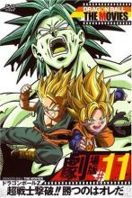
撒旦雖然贏得天下第一比武大會的冠軍，卻也惹得瘟神上門。18號時不時上門催討撒旦許諾的兩千萬元，令這個虛名英雄不厭其煩。這一天，一個西
裝革履的男子但這挑戰書上門，唯恐兒時尿床的醜聞公告世人，撒旦被迫接受挑戰，隨著個男人來到了位於大海中央的小島之城——米克因城。除了18
號緊緊跟隨外，悟天和特南克斯也偷偷尾隨而至。米克因城的主人是加雅•巴答男爵。為了報兒時撒旦欺負自己的仇恨，他聘請眾多優秀的科學家通過
基因重組製造出實力強大恐怖的生化戰士，其中就包括悟天和特南克斯的宿敵布羅利。戰鬥開始朝著不可預測的方向發展……
七龍珠Z 復活的融合!!悟空和貝吉達
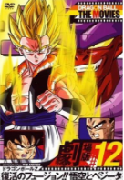
北銀河正在舉行冥界第一武術大會，孫悟空和來自西銀河的排骨飯熱戰正酣。就在這時，冥界卻出了亂子。閻王殿中，一名一心玩樂的小鬼不慎碰壞
靈魂清洗裝置，導致所有的邪氣外泄，進而引發冥界巨大混亂。閻王被困在結界中不得動彈，而人間也受到影響，一時間鬼怪橫行，連死去很久的弗
利札軍團也再次覆活。正在對決的悟空和排骨飯感知到冥界的變化，於是中斷比賽前去為閻王解圍。他們遇到一個胖乎乎卻擁有強大實力和怨念的怪
物，即使數度變身的孫悟空也奈何它不得。正在危難時刻，早已墮入地獄的貝吉塔及時趕來，最強的龍珠戰士再次聚首……
七龍珠Z 龍拳爆發!!悟空捨我其誰
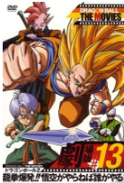
晴朗的一天，悟飯和比迪麗正在教室上課，這是接到一條求助信息。原來有個老頭準備跳樓自殺，他們連忙化身賽亞超人前去營救。從這個奇怪的老
頭口中，他們得知距今一千五百年前，南銀河科納茲星球曾有一名超級英雄塔皮歐，後來不知何種原因被困在音樂盒中。為防止即將到來的大災難，
孫悟空父子在老頭的請求下召喚了神龍，終於救出塔皮歐，卻發現塔皮歐並不領情，而老頭似乎又隱藏着某種陰謀。此後不久，一個邪惡的怪物出現
在都市之中，它只有下半截身體，上半截則被封印在塔皮歐的體內。一切昭然若顯，龍珠戰士則面臨巨大的危機……
七龍珠 最強之道
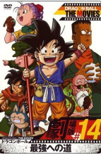
在杳無人跡的包子山中，生活着一個無憂無慮、天真純潔的男孩，名叫孫悟空。他自幼和爺爺孫悟飯相依為命，並習得一身武功。某天，他遭遇來自
大城市的時尚女孩布瑪。布瑪正在四處尋找龍珠，傳説將7顆龍珠湊齊後便可召喚出神龍，繼而實現心中的願望。在布瑪的慫恿下，小悟空隨其走出深
山，一路上遭遇了烏龍、亞姆、普爾、龜仙人等夥伴。與此同時，實力強大的紅緞帶軍也在四處尋找龍珠，為達目的他們不惜燒殺搶掠。為了龍珠，
小悟空一方與紅緞帶軍不可避免發生衝突。連番惡戰旋即展開，而浩浩蕩蕩的龍珠傳奇也就此拉開序幕……
七龍珠Z 神與神
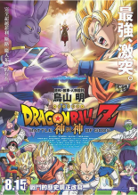
故事是發生在電視動畫『七龍珠Z』；原作漫畫第517話與第518話中間空白的十年。在魔人普烏一戰4年後，地球上人們對魔人的記憶被消除，悟飯
與碧兒已結為夫婦，布瑪在自家舉辦活動。同時破壞神比魯斯剛甦醒起來，在各星球大肆破壞，界王神們開始留意此事。比魯斯聽說了將弗利沙打倒的
賽亞人，因而前往界王星找尋悟空。很久沒見到強敵的悟空顯得特別興奮，不顧界王的忠告而向比魯斯挑戰，但是在壓倒性的力量之前悟空戰敗了；在
地球上因比魯斯跟普烏爭布丁，激怒的比魯斯打算要毀滅地球。而悟空在神龍的引導下，成功變身「超級賽亞人之神」，並與比魯斯一戰，在大戰後，
悟空的力量使比魯斯滿意了，也決定不毀滅地球，使世界恢復和平。
七龍珠Z 復活的「F」
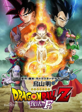
在與破壞神比魯斯的戰鬥3年之後，地球再度迎來和平，但弗利札軍殘存的索魯貝為了尋找七龍珠而逼近地球。其目的是為了讓軍團再起而令弗利札復活
。宇宙史上最邪惡的這一願望終於實現，復活的弗利札計劃著向悟空他們這些賽亞人復仇……於是新弗利札軍聚集到地球，悟飯、比克、克林、龜仙人、
天津飯與1000名士兵展開激戰。悟空與貝吉達開始了與弗利札的宿命對決，但弗利札的實力卻獲得了壓倒性的提升！弗利札變身新形態為「黃金弗利札」
，悟空也變身新形態為「超級賽亞人藍」跟弗利札展開激戰，激戰中悟空發現黃金弗利札的弱點，不斷地攻擊使弗利札下風，悟空好心放過弗利札一時鬆
懈就遭索魯貝暗算而重傷，悟空倒下時由貝吉達輪流上陣對付弗利札，悟空吃了克林的仙豆而全回復。貝吉達同樣變身為超級賽亞人藍的壓倒性攻擊將弗
利札逼上絕路，當貝吉達要消滅弗利札時，結果弗利札毀滅地球！維斯將時間倒回三分鐘的幫助下悟空終於消滅了弗利札，地球再度得救了。
七龍珠超 布羅利
參見七龍珠超 布羅利
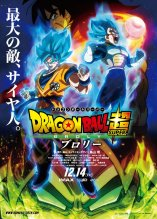
七龍珠超 超級英雄
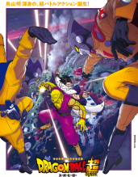
紅領巾軍被孫悟空滅掉的30年後，雷德統帥的兒子瑪仙達欲重組紅領巾軍來實現當時父親的野心，並矇騙了蓋洛博士的孫子海德博士來實現野心，並引誘孫悟飯等人與新的人造人展開對決。